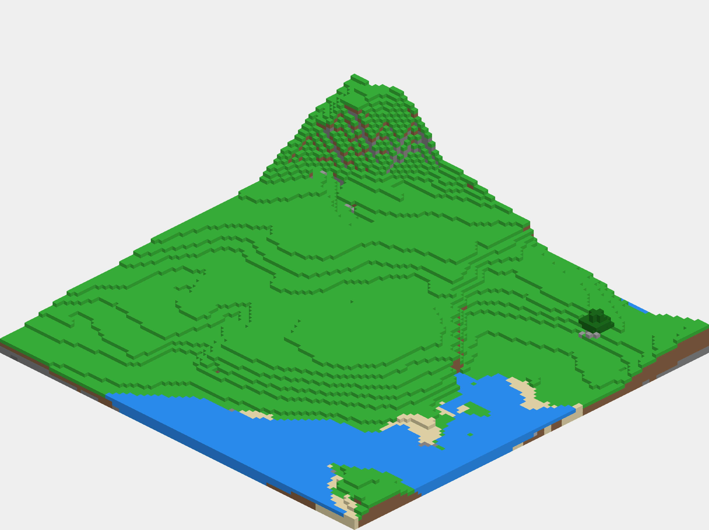
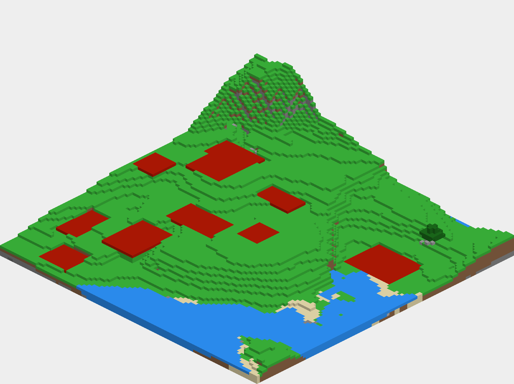
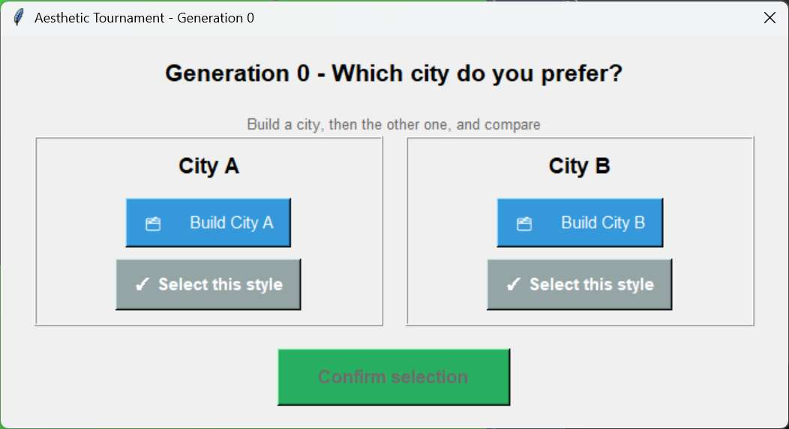
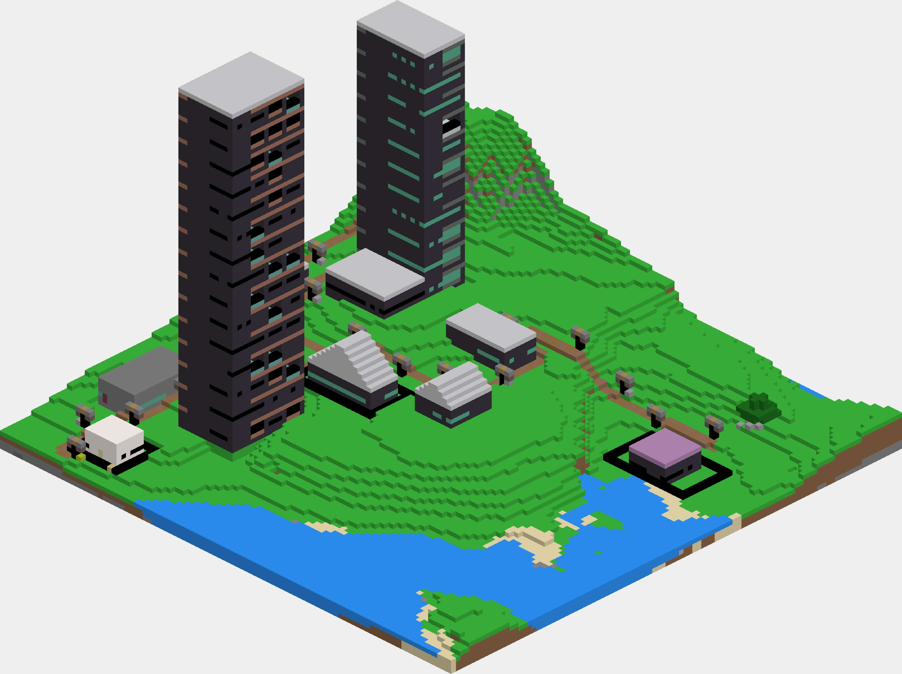
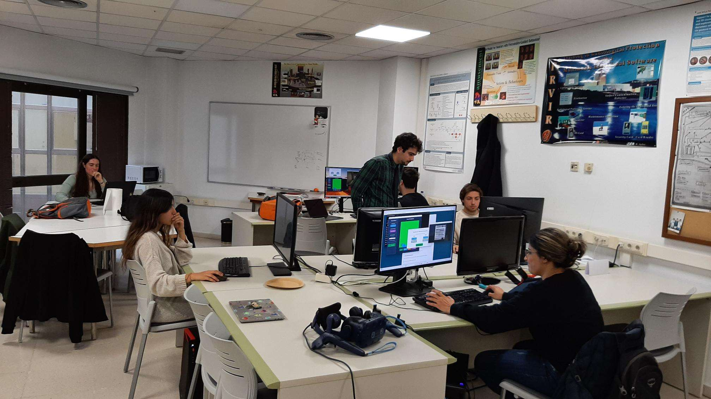

Procedural Content Generation in Virtual Environments Using Interactive Evolutionary Algorithms
- Period
- August 2025–January 2026
(Bachelor's Thesis) - Tool(s) used
- Minecraft (Java, Forge 1.21.4)
GDMC-HTTP
Python - Team size
- 1 person (individual thesis)
- Role(s)
- Researcher
Sole developer
View on Github
View full thesis (PDF)
View derived paper (IEEE CoG)

The project

Bachelor's Thesis (Computer Engineering, UPM) in which I designed and programmed from scratch a system that generates complete cities in Minecraft, in the context of the Generative Design in Minecraft Competition (GDMC): an international competition that requires 100% autonomous settlement generation, evaluated by a panel of experts in modding, AI, architecture and urban planning. My approach investigates what happens when, instead of removing the human from the process, they are actively brought into the evolutionary loop through an interactive genetic algorithm (IGA), which uses the user as the fitness function for the hardest criterion to formalize in the competition: aesthetics.
The system
The system takes an unknown terrain and the number of buildings to construct as input, and generates the complete city by combining several modules. All the design, research and code are individual work.

Terrain and plots
I analyzed the terrain via the GDMC-HTTP API to build height,
slope and block-type maps, and designed a genetic algorithm that places
building plots by optimizing a custom fitness function that penalizes
slope, the presence of water and elongated plots, and rewards large,
square plots.
Shape grammar and indirect parametric encoding
I extended an existing shape grammar engine (box-split grammar)
from the literature, adding a full 90/180/270° rotation system
propagated to all children of each node, plus logical operators (AND/OR) and comparators
for rule constraints, which the original system didn't support.
I also designed my own indirect parametric encoding (IPE):
a 51-dimensional vector representing the color, material, category and finish of
each block in a continuous latent space, with spatial variation via noise and
periodic patterns, projected back to the discrete block vocabulary via a
weighted nearest neighbor. This makes it possible to generate coherent
material palettes for an entire city from a small genome, instead of having to optimize
each block directly.

Interactive genetic algorithm (IGA)
I built a tournament interface where the system presents two candidate cities
over the same plot layout and the user picks the one they prefer. I designed the
algorithm to alternate generations with human feedback, "contamination"
generations that inject random diversity, and autonomous local exploration
generations with elitism; a scheme specifically designed to minimize the
number of decisions the user needs to make without losing search
capability.

Path network
I implemented a two-phase hybrid approach to connect all the buildings:
ACO-Steiner (ant colony optimization over the rectilinear
Steiner tree) decides the network topology, with a cost function I modified
to also penalize terrain elevation change, not just distance; and
A* then resolves each individual connection while avoiding obstacles and water.
User validation
I designed and ran an experiment with 5 users: each generated a city with the IGA, and afterwards everyone blindly rated those cities alongside 5 more randomly generated ones, without knowing which was which.

Cities generated with the IGA received an average aesthetic rating of 7.30/10 versus 6.84/10 for the random group, with a medium effect size (Cohen's d ≈ 0.60) despite not reaching statistical significance with only 5 evaluators. Functionality and adaptability remained equivalent between both groups, confirming that optimizing for aesthetics didn't harm the other criteria. The most consistent finding from the interviews was that color (specifically the chromatic harmony between buildings) is by far the factor that weighs most heavily on users' aesthetic perception. The experiment also made evaluator fatigue evident: decision times became increasingly irregular generation after generation.
Scientific publication
Based on this thesis I wrote and submitted a scientific paper to the IEEE Conference on Games (CoG), formalizing the system and strengthening the statistical analysis of the experiment (including the effect size calculation). The paper wasn't accepted in this edition, but it was a very valuable experience in formal scientific writing, peer review and communicating research results outside the university's own academic context.
What I learned
- Designing and implementing a full interactive genetic algorithm, from the genome to the user feedback interface.
- Extending an existing shape grammar engine by adding full 4-direction rotation and logical operators to constraints.
- Designing a custom indirect parametric encoding (51-dimensional latent space) to generate coherent material palettes.
- Applying ant colony optimization (ACO-Steiner) and A* to plan urban path networks sensitive to terrain elevation change.
- Designing and running a user experiment and analyzing the results with statistical rigor (Welch's t-test, Cohen's effect size).
- Writing and presenting a paper at an IEEE conference based on an academic project.